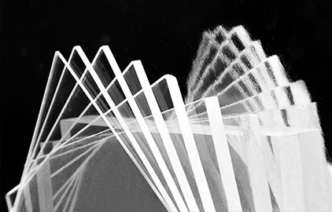
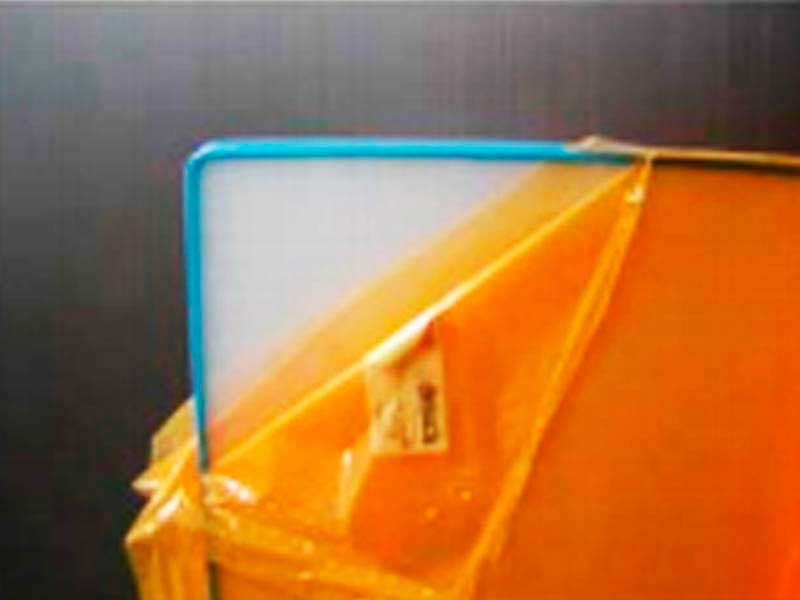
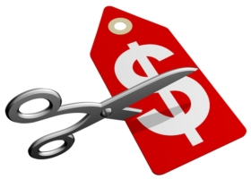
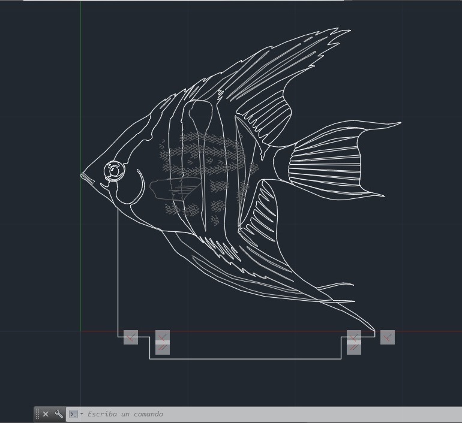

Idioma: English
Aqui realizaremos el desarrollo de nuestro proyecto, siguientes los pasos ya descatados anteriormente en los puntos anteriores.
JUSTIFICACION DEL PROYECTO
Nuestro producto será producido con un material elegido por ciertas circunstancias como, velocidad de producción, durabilidad y costo.
Resistente
Primero vamos a destacar el uso de materiales resistentes o de larga duración, como el uso de láminas de acrílico transparente, para obtener un excelente grabado y al momento de realizar el armado de la lámpara, este produzca un mayor efecto con las luces LED.
Durabilidad
El acrílico al ser un polímero nos garantiza mayor durabilidad, lo que lo hace resistente a caídas e incluso a ralladuras menores sin afectar su efecto que obtendrá con el uso de las cintas LED.
Costo
Los materiales usados son fáciles de conseguir y también de bajo costo, de esto modo aminoramos el costo de producción y nos permite realizar modificaciones que contribuyan a la producción de nuestro producto sin elevar los precios.
ANIMALES Y SUPERHEROES
Nuestros primeros dos diseños es a elección de los gustos del cliente, sin embargo, el diseño puede cambiar y estar sujeto solo a las tendencias del momento.
Este diseño fue realizado para un tipo de público más joven y así como éstos existen otros diseños variados que son atractivos para un público más juvenil.
Este diseño es más elegante con temática de animales o cosas abstractas que producen un ambiente más cómodo y agradable a la vista, hecho para un público mayor que no gusta de temas llamativos como series, comics o videojuegos.